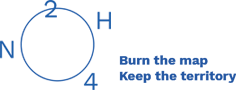

Upcoming
- • 29/06/2018 - 14:00-18:00
État des Lieux, part 1 @ CIVA
Rue de L’Ermitage 55 Kluisstraat, 1050 Ixelles
More info - • 30/06/2018 - 18:00
Preview of 2nd WABook at dinA
Nieuwbrug 3 Rue du Pont Neuf, 1000 Brussels
More info - • 01/07/2018 - 16:00
État des Lieux, part 2 @ Friche Josaphat (Jardin Latinis)
Avenue Gustave Latinislaan 152, 1030 Schaarbeek
More info - • 15/06 - 04/07 2018
Revisiting Heritage: Notes from Brussels
at LUCA School of Arts (Brussels), in collaboration with Arton Foundation (Warsaw) and supported by Creative Europe.
More info - • 21/06 - 04/07 2018
POINT K.O.
At nodine, Lakensestraat 105 Rue de Laeken, 1000 Brussels.
Opening 21/06/2018 - 18:00
More info - • 22/09 - 23/12 2018
The Measure of Disorder
with Teresa Cos at Argos – Centre for Art and Media
Opening 22/09/2018 - 18:00 More info - • 10/10 - 04/11 2018
OPEN LAB – EPHEMERAL ARCHIVAL STATION #2
with e.a.st. (Ephemeral Archival Station) with Euridice Kala, Marie Voignier, Mbali Dhlamini, Teo Betin, Steeve Bauras & Quentin Mornay (e.a.)
More info - • 11/10 - 18/11 2018
Straight Ahead
with Claude Cattelain
at MAAC
More info - • 20/10 - 18/11 2018
The Chinese Restaurants I, II and III
with Vincen Beeckman
at ETE 78
More info - • 29/10 - 02/12 2018
Mira Sanders scenography for WAB meeting point
at dinA
More info - • 29/10 - 02/12 2018
WAB participants solo expo’s (Various Artists, Shervin Kianersi, Davide Tidoni, Francesca Chiacchio, Oracle)
at n0dine
More info - • End of October - December 2018
Gudny Rosa Ingimarsdottir in residency
at Saskia Gevaert
More info - • 08-18/11/2018
Thomas Bernardet & Florent Mulot
Walker films at Argos – Centre for Art and Media
More info - • 08/11/2018
WAB presentations at Iselp
Els Opsomer
More info - • 15/11/2018 - 31/03/2019
A short history of Brussels’ parks
At CIVA
More info - • 17/11/2018
PASTOREJANT
With Till Roeskens and Mathilde Spini
lecture performance at Argos
More info - • 22/11/2018
WAB presentations at Iselp
Various Artists
More info - • 22-25/11/2018
Performance at Rectangle
Coraline Guilbeau
More info - • 29/11/2018
WAB presentations at Iselp
Davide Tidoni
More info - • 01/12/2018
WAB presentations at Iselp
Round table conversation
More info
WAB participants
- • bolwerK
- • Bruno De Wachter
- • Buratinas
- • Christian Hansen
- • Davide Tidoni
- • Francesca Chiacchio
- • Isabel Burr Raty
- • Jesse Cremers
- • Kasper Demeulemeester
- • Marialena Marouda
- • Mira Sanders and Maud Salembier Project, with Till Roeskens, Gudný Rósa Ingimarsdóttir, Cristina Garrido, Ivo Provoost & Simona Denicolaï, Chloé Schuiten & Clément Thiry
- • Nikolas Lesthaege
- • Oracle (Michel Yang, Justine Maxelon, Caroline Daish)
- • Shervin Kianersi Haghighi
- • Steven Jouwersma
- • Studio Anatomy – AOB’ Master 1 Faculty of Architecture campus Sint-Lucas Ghent, KU Leuven (Teachers Jo Van den Berghe, Laurens Luyten and Mira Sanders)
- • TAFEL
- • Various Artists
- • wænd
Organisation
- Concept and coordination : nadine, Loes Jacobs, Pacôme Béru, Various Artists, An Goovaerts.
- Collaborators : Mira Sanders & Maud Salembier
- Graphic design : Überknackig
- WAB is a project by nadine vzw, supported by Vlaamse Gemeenschap, Vlaamse Gemeenschapscommissie van het Brussels Hoofdstedelijk Gewest and Mobiel Brussel van het Brussels Hoofdstedelijk Gewest (Buratinas project)
info@wab.zone


